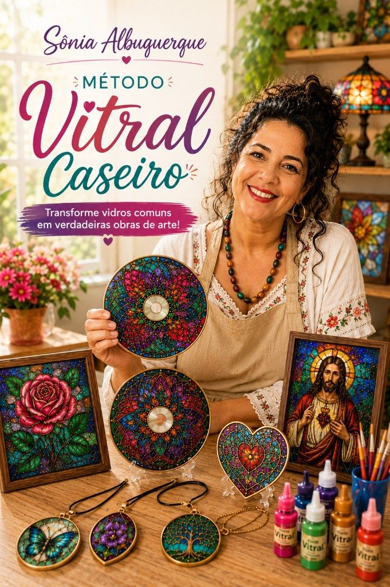
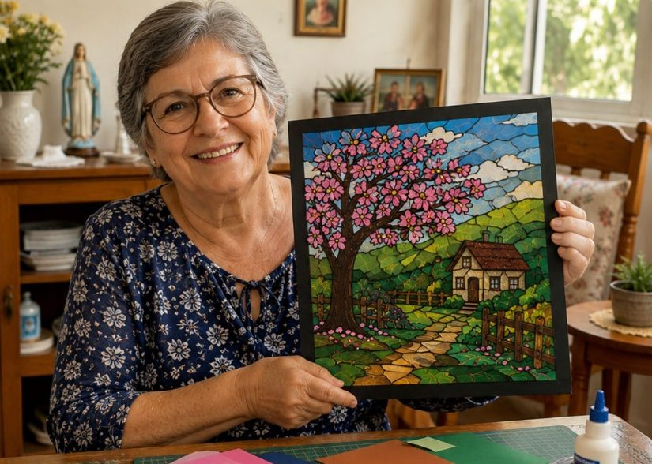
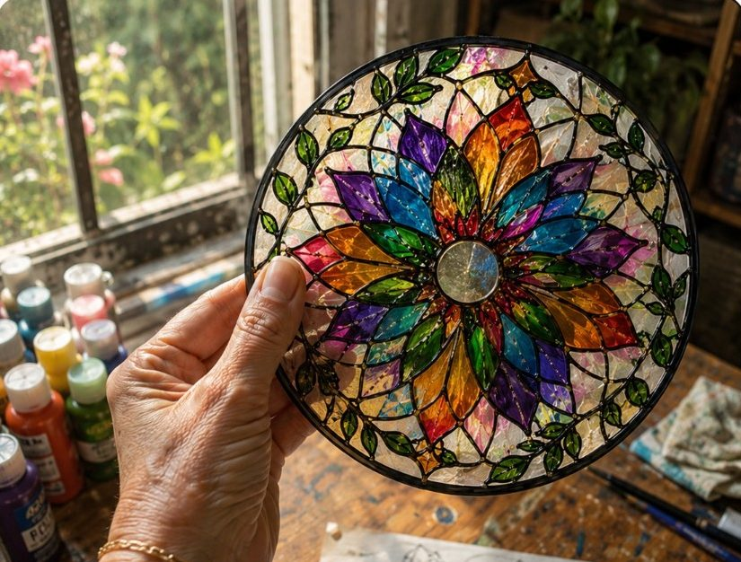
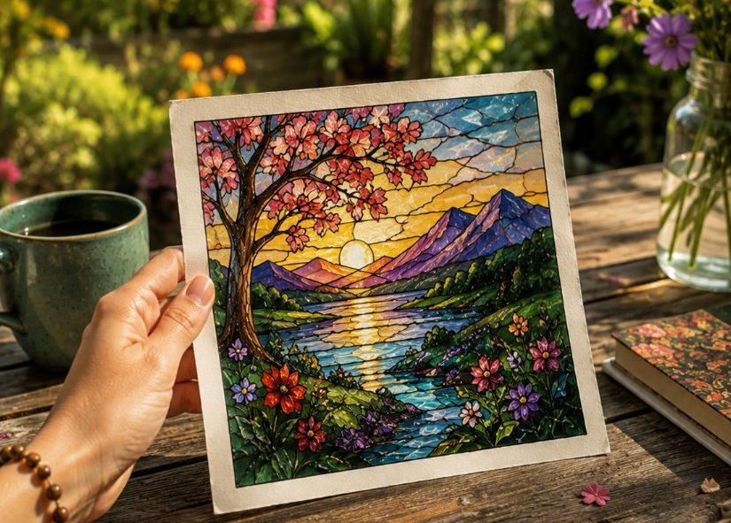
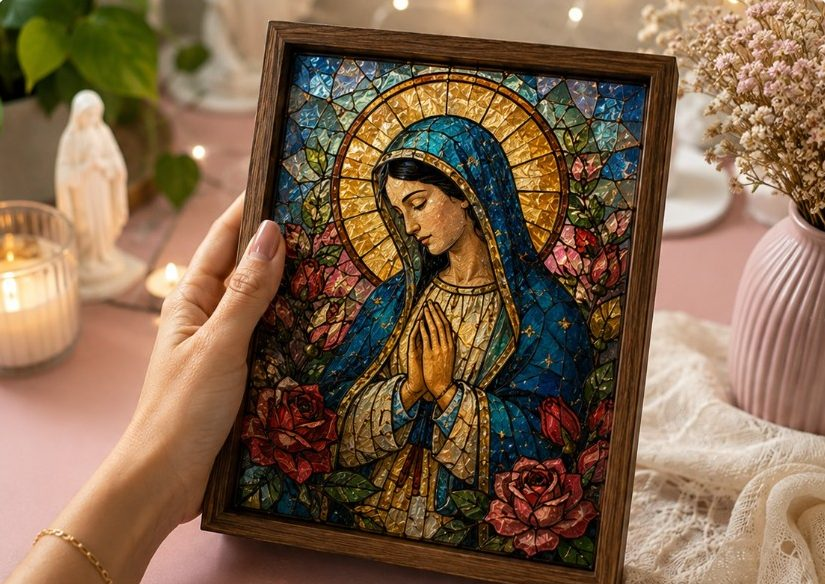
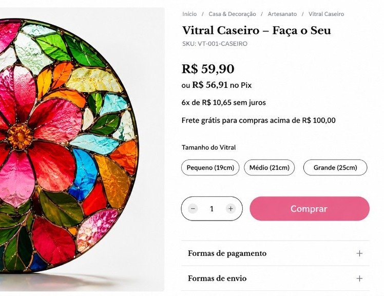
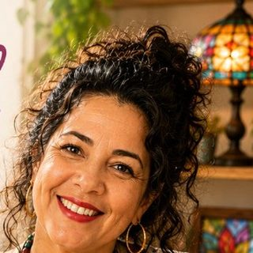

Oi! Meu nome é Sônia Albuquerque e trabalho com vitral caseiro há mais de 8 anos. Descobri um jeito simples e lucrativo de transformar CDs, papéis, vidros e molduras em peças com efeito vitral que encantam — e que podem gerar mais de R$1.500 por mês, mesmo começando do zero.

Responda 7 perguntas rápidas e eu monto um plano personalizado com os moldes e as técnicas ideais pra você começar sua primeira peça esta semana.
Os resultados podem variar de acordo com a dedicação, experiência, disponibilidade e aplicação individual de cada aluna. O conteúdo é educacional e não representa garantia de ganhos financeiros.
Não existe resposta errada — isso só me ajuda a ajustar seu plano.
Com 15 minutos por dia já é possível terminar sua primeira peça.
Pode marcar mais de uma opção.
Veja peças feitas por alunas que nunca tinham feito artesanato antes:




Com moldes prontos e técnicas fáceis, qualquer pessoa consegue criar peças lindamente decoradas — mesmo sem nunca ter feito artesanato.
No meu método você aprende 100% do zero, com um passo a passo simples que transforma materiais comuns (CD, papel, vidro, molduras) em peças que encantam — e que vendem.
Vou usar isso pra escolher os moldes do seu plano. Pode marcar várias.
Começaram do zero, sem experiência nenhuma com artesanato. Arraste para ver os depoimentos.
E olha a lojinha online de uma das alunas
Ela está vendendo uma única peça por R$59,90 — gastando menos de R$15,00 de material.

Cada peça vendida deixa mais de R$45 de lucro — e dá pra produzir várias no mesmo dia.
Valores citados são exemplos reais informados por alunas e não representam garantia de ganhos. Os resultados variam conforme dedicação e aplicação individual.
Analisando suas respostas...

Com base nas suas respostas, montei um caminho com mais de 120 moldes e o passo a passo pra você criar sua primeira peça — mesmo começando do zero e com pouco tempo por dia.
Alguns dos +120 moldes que você vai aprender
Método Vitral Caseiro
Deà vista · acesso imediato e vitalício
Comprar agora com descontoDesconto válido por: 15:00
Saiba exatamente o que revisar para criar peças impecáveis, sem falhas, sem manchas e com acabamento profissional desde a primeira vez.
Aprenda a fotografar suas peças usando só o celular: luz, ângulos, fundos e composição. Fotos bonitas vendem até 3x mais.
Descubra quais temas são mais buscados e valorizados pelos clientes, para criar peças que vendem o ano todo.
Calcule custo, preço ideal e margem de lucro de cada peça em segundos. Nunca mais venda sem saber quanto está ganhando.
Teste sem compromisso! Se não for pra você, devolvemos todo o valor diretamente no seu Pix ou cartão.
Sônia Albuquerque
Sou apaixonada pela criação artesanal e, desde 2019, me dedico ao universo do vitral caseiro personalizado. Descobri no falso vitral uma técnica simples, acessível e cheia de possibilidades para quem busca criatividade, terapia e também uma fonte real de renda extra.
Comecei fazendo peças só como hobby, para presentear familiares e amigos. Mas rapidamente percebi o quanto elas chamavam atenção, encantavam quem via e despertavam interesse de compra.
Com o tempo fui aperfeiçoando minhas técnicas, testando materiais, tintas e acabamentos — até transformar tudo em um método organizado, simples de aplicar e totalmente acessível para iniciantes.
Hoje ajudo mulheres de todas as idades a criar peças lindas, elegantes e valorizadas — seja para decorar a casa, montar presentes especiais ou começar a vender e gerar sua própria renda. E eu quero mostrar que você também pode. Mesmo sem experiência. Mesmo começando com pouco dinheiro. E trabalhando do conforto da sua casa.
Método Vitral Caseiro
Deà vista · acesso imediato e vitalício
Quero garantir minha vagaDesconto válido por: 15:00
Vagas limitadas para completar a última turma com desconto.
Os resultados podem variar de acordo com a dedicação, experiência, disponibilidade e aplicação individual de cada aluna. O conteúdo é educacional e não representa garantia de ganhos financeiros.